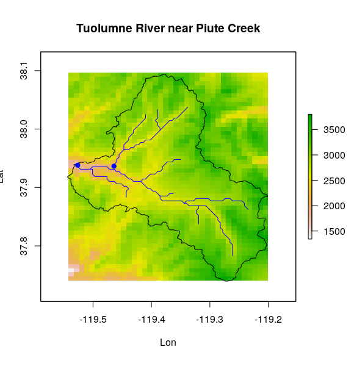

Upper Tuolumne subwatershed
This tutorial demonstrates how to create inputs for the UW routing model for a watershed in the Upper Tuolumne River Basin, California. I am assuming that you already have a flow direction map (e.g. generated from a DEM using GIS software), and that you have runoff and baseflow outputs from a hydrologic model (such as VIC).
Data and study area
The following demo data are included with the RoutR package:
- Digital elevation model (DEM) (raster)
- Flow direction map (raster)
- Watershed boundary (shapefile)
- Gauge coordinates (shapefile)
- River centerlines (shapefile)
The study area is a 550 sq. km portion of the Upper Tuolumne basin. The watershed outlet is on the Tuolumne River, near its intersection with Piute Creek. 
Flow direction file
You can use different GIS softwares (e.g. ArcGIS, GRASS GIS) to generate a D8 flow direction map based on a DEM. However, automatic flow direction delineation is prone to errors, so it is usually a good idea to check that your flow direction map is consistent with the true shape of the watershed (if known). I have developed the Flow Direction Toolkit for this purpose.
The UW routing model requires a specific input format for its flow direction files. Therefore, RoutR includes the capability to convert from commonly-used formats to the required UW routing model input format.
data(upptuo) # load sample data
plot(fd_merc, main = "Flow direction map")
# Convert flow directions from ArcGIS convention to VIC/UW routing model convention.
fd_merc_vic <- convert_flowdir(fd_merc, "ARCGIS", "VIC")
In case the flow direction map is larger than the basin area, clip the flow direction map to match the basin mask.
# Create a mask of the basin
basinmask_merc <- rasterize(bb_merc, dem_merc)
savename <- "fd_merc_clip.tif"
# Clip the flow direction file and save as ASCII Grid file
fd_merc_clip <- clip_flowdir(fd_merc, basinmask_merc, savename, out_format = "ascii")
Fraction file
If the model grid cells are relatively large compared to the size of the study basin, then the coarse watershed mask may overestimate or underestimate the actual basin area. The routing model uses a fraction file to account for fractional coverage on the basin boundaries.
fract <- make_fract(dem, bb, saveloc = ".",
basename = "tuo",
target_res = 1/32
)
plot(fract, "Fractional area map")
lines(bb)
Currently, make_fract only works for geographic coordinate systems with square grid cells. This is a limitation of RoutR.
If the model grid cells are small compared to the total size of the basin, then the partial grid cells will be insignificant, and you can use a trivial fraction file with all values equal to 1. RoutR provides make_fract_trivial to create such a fraction file. (This function works with either geographic or projected coordinate systems.)
fract <- make_fract_trivial(basinmask_merc, saveloc = ".", basename = "tuo")
Station location file
If you have a list of station locations, you can use make_stnloc to automatically generate a station location file. r is a raster with the same resolution and extent as the flow direction file (i.e. the flow direction file).
# Make a text file with gage coordinates, if one doesn't exist already
write.table(coordinates(gage), file = "gage_coords.txt")
# Generate the station location file
r <- fd
basename <- "tuo"
make_stnloc(r, "gage_coords.txt", basename, saveloc = ".")
Runoff files
Files containing time series of runoff and baseflow are required at each grid cell in the watershed. These can be generated by running a land surface model, such as VIC, or runoff (and baseflow) fields can be downloaded from an existing dataset.
Unit hydrograph file
The VIC 4.2d documentation has a unit hydrograph file that "can be used unmodified if only flows on the monthly scale are required." It is reproduced below:
0 0.0100
1 0.2400
2 0.3300
3 0.1800
4 0.1200
5 0.0500
6 0.0200
7 0.0100
8 0.0100
9 0.0100
10 0.0100
11 0.0100
Parameter file
This is the control file for the UW routing model. It specifies the locations of the routing model inputs and outputs, and parameters such as start and end dates of the simulation. Here is the parameter file for the Upper Tuolumne subwatershed:
Here is a block quote. At least, I think this is the correct Markdown syntax.